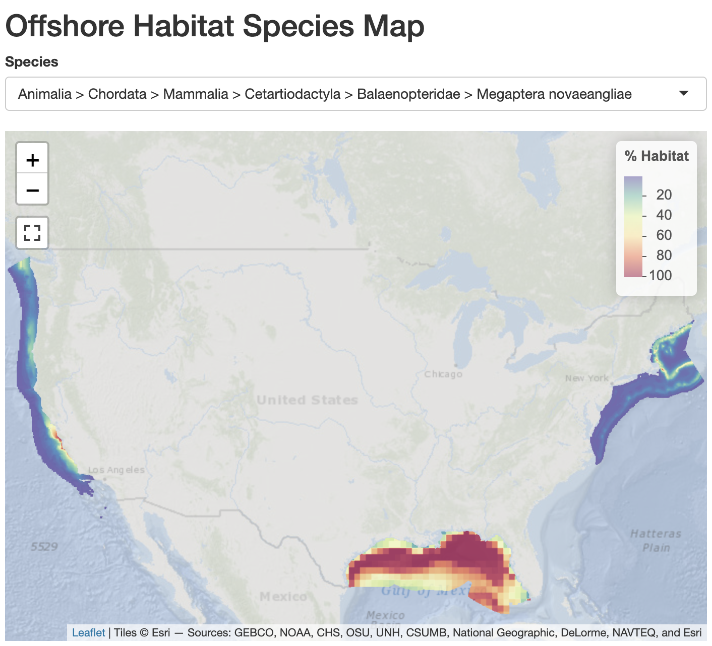
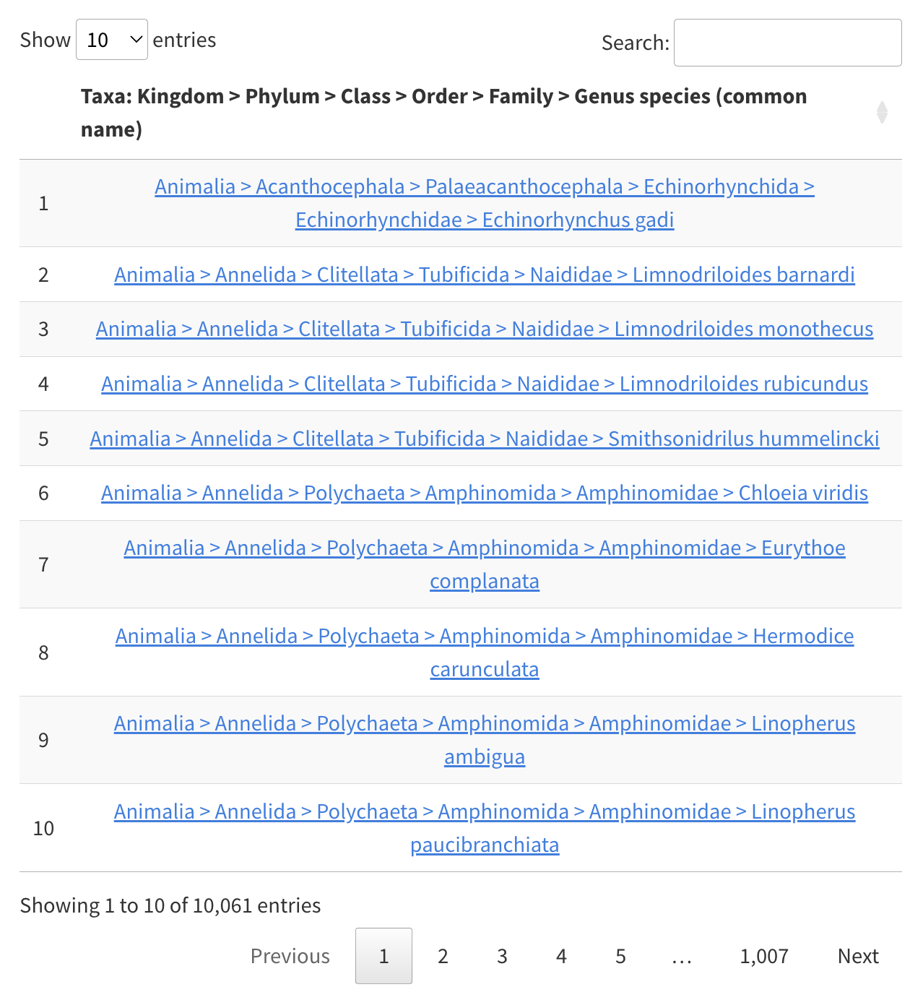
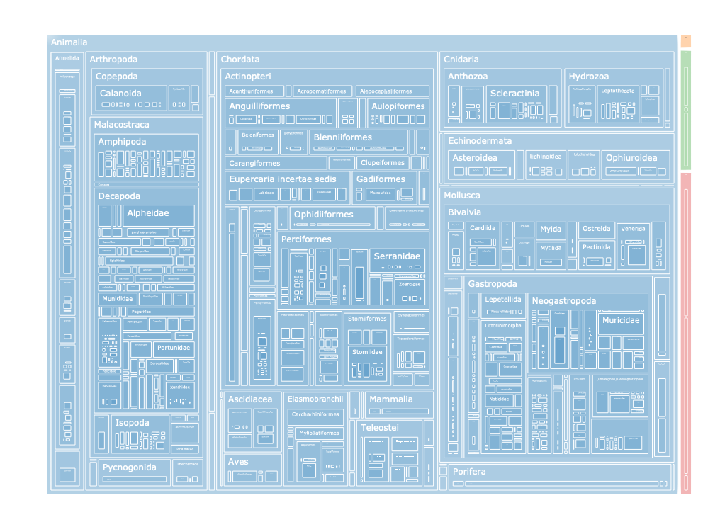
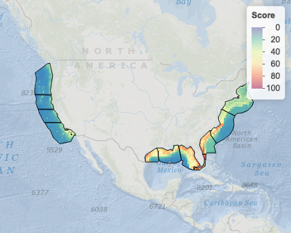
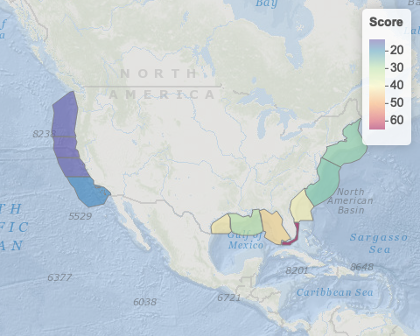
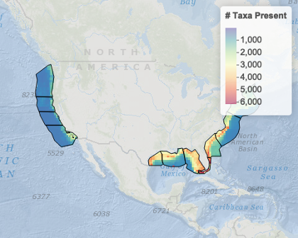
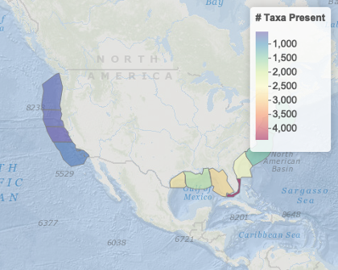

4 Results
From the fine scale pixelated maps we aggregate up to the Block, Zone and at the broadest level Region. The normalized species distributions, e.g. the humpback whale Megaptera novaeangliae (Figure 4.1), for all 10,061 species, are available online (Figure 4.2; see online interactive table in Appendix A — Species). The taxonomic distribution is also visualized as a treemap (Figure 4.3; see online interactive treemap in Appendix A — Species).


These individual SDMs contribute to metrics for overall Species Richness (the sum of species present as 1 versus absent 0), Species Abundance (the sum of the harmonized score ranging 0 to 100), and Extinction Risk (sum of extinction risk weighted score 0 to 4). The final pixelated maps are visible under the “Pixel Values” subheadings of the online Appendix B — Scoring as well maps under the “Zone Averages” subheadings displaying the comparative Zone’s average pixel value. For instance, you can view the overall Score per pixel (Figure 4.4) and Zone (Figure 4.5), as well as species richness pixel (Figure 4.6) and Zone (Figure 4.7).
The average pixel values of each summary metric per Zone and broader Region are summarized into Table tbl-zones. The Block values are displayed as a map and table per Zone under the online * Appendix C — Blocks. These values have been normalized to display the deviation from the average value within the containing Zone so as to answer the question, which blocks are unusually high or low relative to the Zone’s average?




Based on the best available species distributions, the Atlantic Region displays the highest average species richness (698.6 species per pixel), compared to the moderate Gulf of Mexico (38.9) or lowest Pacific (15.5).